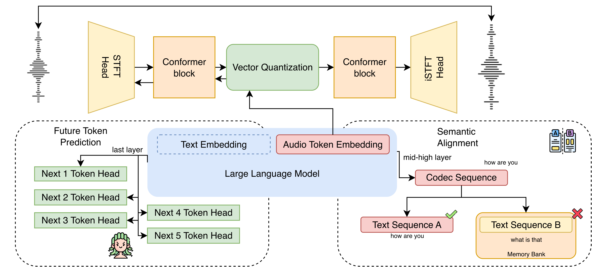

Training neural audio codecs with language-model-facing objectives to produce tokens that are both reconstructable and predictable under autoregressive modeling.
Neural audio codecs are widely used as tokenizers for spoken language models, but they are optimized for waveform reconstruction rather than autoregressive prediction. This mismatch injects acoustically driven uncertainty into the discrete token space and increases language-model perplexity.
We propose LLM-Codec, which trains the codec encoder with language-model-facing objectives while keeping both codec and LLM architectures unchanged. LLM-Codec introduces (i) future token prediction with Medusa-style multi-step heads to encourage multi-step predictability, and (ii) semantic alignment that matches audio and text representations via a memory-bank contrastive loss. A differentiable Gumbel bridge enables end-to-end gradients from these objectives to the codec encoder.
Three key components work together to make codec tokens LLM-friendly, without modifying model architectures.

K Medusa-style prediction heads with inverse-distance weighting capture multi-step dependencies, encouraging tokens that are locally predictable beyond a single step.
Layer-wise cosine alignment and memory-bank contrastive loss ensure audio and text representations match inside the LLM, preserving linguistic content.
Hard Gumbel-Softmax keeps discrete tokens in the forward pass while providing smooth gradients backward, enabling end-to-end codec encoder optimization.
Codec-SUPERB-tiny examples synthesized with the paper baselines: LLM-Codec, AUV, BigCodec, UniCodec, and WavTokenizer-L. Each domain contains five examples.
Reconstruction quality on Codec-SUPERB-tiny and speech coherence on SALMon benchmark.
| Model | Mel ↓ | STFT ↓ | PESQ ↑ | STOI ↑ |
|---|---|---|---|---|
| BigCodec | 0.810 | 1.718 | 2.208 | 0.877 |
| UniCodec | 0.830 | 1.824 | 2.022 | 0.851 |
| WavTokenizer-M | 0.904 | 1.846 | 1.843 | 0.823 |
| AUV (base) | 0.762 | 1.648 | 2.094 | 0.850 |
| LLM-Codec | 0.683 | 1.507 | 2.147 | 0.858 |
| Model | Speaker | Gender | RIR | BG-All | Average |
|---|---|---|---|---|---|
| WavTokenizer-L | 49.0 | 53.0 | 39.0 | 53.0 | 49.5 |
| BigCodec | 49.5 | 49.0 | 47.0 | 47.0 | 49.5 |
| AUV (3 ep) | 53.0 | 54.5 | 40.5 | 46.5 | 48.4 |
| LLM-Codec (3 ep) | 72.0 | 71.5 | 64.0 | 57.0 | 62.3 |
@article{chung2026llm,
title={LLM-Codec: Neural Audio Codec Meets Language Model Objectives},
author={Chung, Ho-Lam and Chen, Yiming and Lee, Hung-yi},
journal={arXiv preprint arXiv:2604.17852},
year={2026}
}